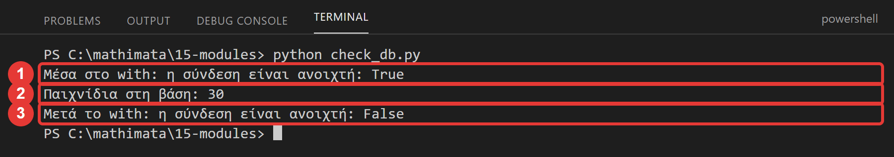
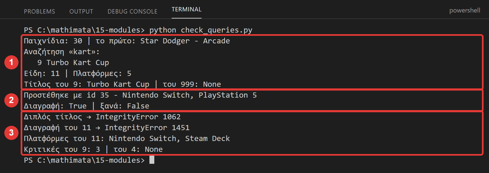
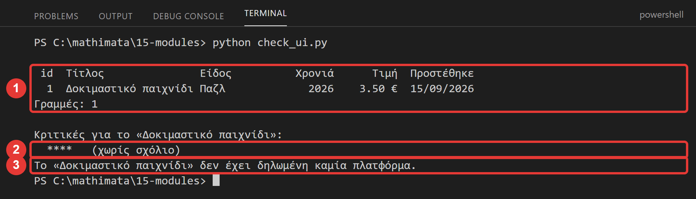
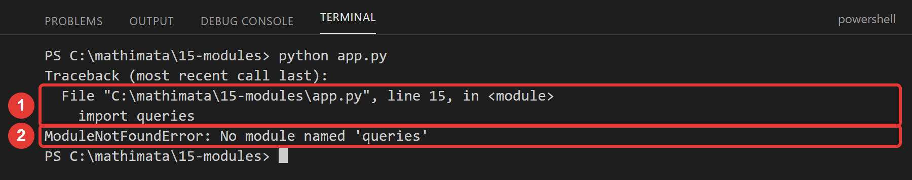
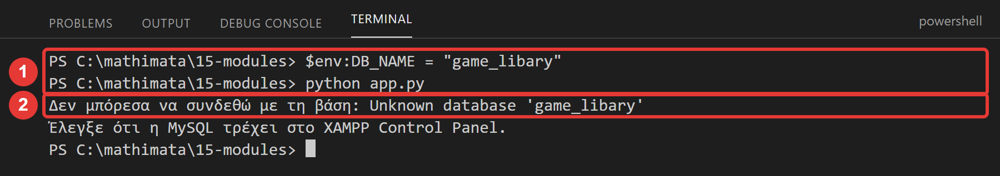

Μάθημα 15: Οργάνωση του κώδικα: modules, with και ρυθμίσεις¶
Python και MySQL: η εφαρμογή χωρίζεται σε modules (config, db, queries, ui, app), το with κλείνει μόνο του τη σύνδεση, και οι ρυθμίσεις της βάσης βγαίνουν από τον κώδικα
Διάρκεια: 2 κύκλοι × περίπου 45′ εργασία (2 διδακτικές ώρες)
Φύλλο εργασίας
Αυτή η σελίδα εξηγεί τις έννοιες. Οι ασκήσεις και οι οδηγίες για κάθε κύκλο βρίσκονται στο Φύλλο εργασίας 15. Δούλεψε με τις δύο σελίδες ανοιχτές.
Αρχεία εργαστηρίου¶
| Αρχείο | Κύκλος |
|---|---|
| 01-start-state.sql | πριν αρχίσεις |
| config.py | 1 |
| db.py | 1 |
| check_db.py | 1 |
| queries.py | 1 |
| check_queries.py | 1 |
| ui.py | 2 |
| check_ui.py | 2 |
| app.py | 2 |
Η αποστολή¶
Η εφαρμογή του Μαθήματος 14 είναι ένα αρχείο με πάνω από 400 γραμμές. Μέσα του ανακατεύονται τρία διαφορετικά πράγματα: οι εντολές SQL, οι ερωτήσεις και οι εκτυπώσεις προς τον χρήστη, και η σύνδεση με τη βάση. Δουλεύει, αλλά:
| Πρόβλημα | Παράδειγμα |
|---|---|
| Δύσκολο να βρεις κάτι | Πού είναι το SELECT της λίστας; Πού τυπώνεται το αποτέλεσμα; |
| Δύσκολο να αλλάξεις | Για να αλλάξεις τον κωδικό της βάσης, ψάχνεις μέσα σε όλο το αρχείο. |
| Δύσκολο να ξαναχρησιμοποιήσεις | Η αναφορά του Μαθήματος 16 θα χρειαστεί τα ίδια SELECT, αλλά όχι το μενού. Θα αντιγράφεις κώδικα; |
| Δύσκολο να δοκιμάσεις | Για να δεις αν δουλεύει ένα SELECT, πρέπει να περάσεις από ολόκληρο το μενού. |
Σήμερα δεν αλλάζεις τι κάνει η εφαρμογή: αλλάζεις πώς είναι οργανωμένος ο κώδικας. Λέγεται αναδιοργάνωση (refactoring) και είναι δουλειά που κάνουν συνέχεια οι προγραμματιστές. Στο τέλος η εφαρμογή θα συμπεριφέρεται ακριβώς όπως πριν, αλλά με πέντε μικρά αρχεία, καθένα με μία δουλειά.
Στο τέλος θα μπορείς¶
- να εξηγείς τι είναι module και να φτιάχνεις και να εισάγεις δικά σου (
import db). - να χωρίζεις ένα πρόγραμμα σε επίπεδα: ρυθμίσεις, σύνδεση, εντολές SQL, οθόνη, εφαρμογή.
- να διαβάζεις ρυθμίσεις από μεταβλητές περιβάλλοντος με
os.environ.get, και να τις αλλάζεις χωρίς να αγγίξεις τον κώδικα. - να χρησιμοποιείς το
withγια τη σύνδεση και τον κέρσορα. - να γράφεις συναρτήσεις πρόσβασης που επιστρέφουν δεδομένα (δεν τυπώνουν) και ξαναπετούν τα σφάλματα με
raise. - να δοκιμάζεις ένα module μόνο του.
- να χρησιμοποιείς το
if __name__ == "__main__":και να διαβάζεις τα σφάλματαimport. - να προσθέτεις μια νέα επιλογή σε εφαρμογή με modules, ξέροντας σε ποιο αρχείο πηγαίνει καθεμία αλλαγή.
Πριν αρχίσεις¶
- Ξεκίνα τη MySQL και τον Apache από το XAMPP Control Panel.
- Φτιάξε έναν φάκελο
15-modulesμέσα στον φάκελο των μαθημάτων και κατέβασε εκεί τα εννέα αρχεία του πίνακα. Κράτησε ακριβώς τα ονόματα: όλα τα.pyπρέπει να είναι στον ίδιο φάκελο. Άνοιξε τον φάκελο στο VS Code και άνοιξε τερματικό. - Φέρε τη βάση στην κατάσταση εκκίνησης: στο phpMyAdmin επίλεξε τη βάση
game_library, άνοιξε την καρτέλα Import, διάλεξε το01-start-state.sqlκαι πάτα Import. - Έλεγξε στην καρτέλα Browse ότι ο
gamesέχει 30 γραμμές, οgenres11, οreviews12, οplatforms5 και οgame_platforms63.
Το αρχείο εκκίνησης σβήνει τα δεδομένα σου
Το 01-start-state.sql σβήνει τους πίνακες της βάσης (και τους δικούς σου tags/game_tags) και τους φτιάχνει από
την αρχή. Σήμερα δεν αλλάζει η δομή της βάσης, αλλά αν χαλάσεις δεδομένα, τρέξε το ξανά.
Ο κύκλος εργασίας
Πρόβλεψη → εκτέλεση → σύγκριση → εξήγηση. Σήμερα πρόβλεψε τι θα τυπώσει το πρόγραμμα ή ποιο σφάλμα θα δώσει. Και μετά από κάθε αλλαγή
τρέχε το αντίστοιχο check_….py: δοκιμάζεις ένα κομμάτι τη φορά.
Κύκλος 1 — Ρυθμίσεις, σύνδεση και εντολές SQL¶
Σε αυτόν τον κύκλο φτιάχνεις τα τρία κάτω επίπεδα της εφαρμογής: config.py, db.py και queries.py.
1.1 Τι είναι ένα module¶
Ένα module είναι ένα αρχείο Python (db.py) που άλλα αρχεία φορτώνουν με import. Τα modules του οδηγού (mysql.connector) και της Python
(datetime) τα ξέρεις ήδη. Μπορείς να φτιάξεις και δικά σου: αρκεί να τα βάλεις στον ίδιο φάκελο με το πρόγραμμα:
import db # φορτώνει το αρχείο db.py
connection = db.connect() # ό,τι ορίζει το db.py, το βρίσκεις με πρόθεμα db.
- Το όνομα του module είναι το όνομα του αρχείου χωρίς το
.py. Γι' αυτό το όνομα πρέπει να είναι έγκυρο όνομα Python: μικρά γράμματα, χωρίς παύλες, χωρίς να αρχίζει από αριθμό (το02-db.pyδεν μπορεί να γίνειimport). - Η Python ψάχνει πρώτα στον φάκελο του προγράμματος που τρέχεις. Μην ονομάσεις δικό σου αρχείο
mysql.pyήdatetime.py: θα καλύψει τα πραγματικά modules (το είδες στο Μάθημα 3). - Την πρώτη φορά που κάνεις
import, η Python φτιάχνει έναν φάκελο__pycache__με «μεταγλωττισμένα» αρχεία. Είναι φυσιολογικό, μην τον πειράξεις.
1.2 Τα επίπεδα της εφαρμογής¶
Θα χωρίσουμε την εφαρμογή ανάλογα με τι δουλειά κάνει κάθε κομμάτι:
app.py ───► ui.py (ρωτά τον χρήστη και τυπώνει)
│
└─────► queries.py ───► db.py ───► config.py
(εντολές SQL) (σύνδεση) (ρυθμίσεις)
| Module | Η μία δουλειά του | Τι δεν κάνει |
|---|---|---|
config.py |
οι ρυθμίσεις σύνδεσης | τίποτα άλλο |
db.py |
ανοίγει σύνδεση | δεν ξέρει SQL |
queries.py |
οι εντολές SQL: φέρνουν και αλλάζουν δεδομένα | δεν τυπώνει και δεν ρωτά τον χρήστη |
ui.py |
ρωτά τον χρήστη και τυπώνει | δεν ξέρει τη βάση |
app.py |
το μενού· συνδέει τα υπόλοιπα και χειρίζεται τα σφάλματα |
Τα βέλη δείχνουν ποιος εισάγει ποιον, και πάνε προς μία κατεύθυνση: το ui.py δεν γνωρίζει το queries.py, και το queries.py δεν γνωρίζει το
ui.py. Το app.py είναι το μόνο που τα ξέρει όλα.
1.3 Οι ρυθμίσεις έξω από τον κώδικα: config.py και os.environ¶
Μέχρι τώρα τα στοιχεία σύνδεσης (localhost, root, ο κωδικός) ήταν γραμμένα μέσα στον κώδικα. Αν αλλάξουν, αλλάζεις κώδικα, και ένας κωδικός μέσα σε αρχείο
φαίνεται σε όποιον το διαβάσει (το είπαμε στο Μάθημα 3· στο Μάθημα 17 θα το λύσουμε οριστικά). Τώρα τα βάζουμε σε ένα μόνο αρχείο, το config.py, και τα
διαβάζουμε από μεταβλητές περιβάλλοντος:
Μια μεταβλητή περιβάλλοντος (environment variable) είναι μια ρύθμιση που ορίζεται έξω από το πρόγραμμα, στο λειτουργικό σύστημα. Η
os.environ.get("ΟΝΟΜΑ", προεπιλογή) τη διαβάζει, και αν δεν υπάρχει δίνει την προεπιλογή. Έτσι το ίδιο πρόγραμμα δουλεύει σε κάθε υπολογιστή χωρίς αλλαγή
κώδικα: στον δικό σου παίρνει τις προεπιλογές, και σε άλλον τις αλλάζεις από έξω.
Δοκίμασέ το στο τερματικό του VS Code (PowerShell)
$env:DB_NAME = "game_libary" # ορίζει τη ρύθμιση ΜΟΝΟ για αυτό το τερματικό (με λάθος όνομα βάσης)
python app.py # θα δώσει σφάλμα «Unknown database»
Remove-Item Env:DB_NAME # τη σβήνει: το πρόγραμμα ξαναπαίρνει την προεπιλογή
cmd γράφεις set DB_NAME=game_libary. Η ρύθμιση δεν αλλάζει κανένα αρχείο.
1.4 Το with: καθαρίζει μόνο του¶
Μέχρι τώρα έκλεινες τη σύνδεση και τον κέρσορα με το χέρι: cursor.close(), connection.close(). Αν όμως πάει κάτι στραβά πριν από το close(), δεν εκτελείται.
Το with λύνει το πρόβλημα: ανοίγει κάτι, εκτελεί το μπλοκ, και το κλείνει πάντα στο τέλος, ακόμη και αν γίνει σφάλμα:
with db.connect() as connection: # ανοίγει τη σύνδεση
with connection.cursor() as cursor: # ανοίγει τον κέρσορα
cursor.execute("SELECT COUNT(*) FROM games")
print(cursor.fetchone()[0])
# εδώ ο κέρσορας έχει ήδη κλείσει
# εδώ έχει κλείσει και η σύνδεση
Και η σύνδεση και ο κέρσορας του οδηγού υποστηρίζουν with. Δεν χρειάζεσαι πια close().
Στάδιο 1 — Ρυθμίσεις και σύνδεση¶
Άνοιξε τα config.py και db.py. Συμπλήρωσε τα πέντε κενά (____) και τρέξε το check_db.py (δεν έχει κενά):
"""Οι ρυθμίσεις σύνδεσης με τη βάση.
Ό,τι αλλάζει από υπολογιστή σε υπολογιστή (εξυπηρετητής, χρήστης, κωδικός, βάση) γράφεται εδώ και ΜΟΝΟ εδώ.
Τα άλλα modules διαβάζουν τις τιμές από το config.
Συμπλήρωσε τα δύο κενά (____).
"""
import os
# Η os.environ.get("ΟΝΟΜΑ", προεπιλογή) διαβάζει μια ΜΕΤΑΒΛΗΤΗ ΠΕΡΙΒΑΛΛΟΝΤΟΣ: μια ρύθμιση που ορίζεται έξω από το
# πρόγραμμα, στο λειτουργικό σύστημα. Αν δεν υπάρχει, παίρνεις την προεπιλογή.
# TODO 1: ο υπολογιστής όπου τρέχει η MySQL (το XAMPP τρέχει στον ίδιο υπολογιστή)
HOST = os.environ.get("DB_HOST", ____)
USER = os.environ.get("DB_USER", "root")
PASSWORD = os.environ.get("DB_PASSWORD", "")
# TODO 2: η βάση της εφαρμογής
DATABASE = os.environ.get("DB_NAME", ____)
"""Η σύνδεση με τη βάση.
Όλα τα άλλα modules ζητούν τη σύνδεση από εδώ: μόνο εδώ ξέρουμε πώς ανοίγει. Η σύνδεση που επιστρέφεται
δουλεύει και με το with, που την κλείνει αυτόματα στο τέλος.
Συμπλήρωσε τα τρία κενά (____).
"""
import mysql.connector
# TODO 1: το module με τις ρυθμίσεις (το αρχείο config.py)
import ____
def connect():
"""Ανοίγει μια σύνδεση με τη βάση, με τις ρυθμίσεις του config, και την επιστρέφει."""
# TODO 2: η συνάρτηση του οδηγού που ανοίγει σύνδεση (την ξέρεις από το Μάθημα 3)
return mysql.connector.____(
host=config.HOST,
user=config.USER,
# TODO 3: το όνομα της ρύθμισης για τον κωδικό, όπως γράφεται στο config.py
password=config.____,
database=config.DATABASE,
)
"""Έλεγχος του Σταδίου 1: δοκιμάζει τα config.py και db.py. Δεν χρειάζεται να το συμπληρώσεις."""
import db
with db.connect() as connection:
print("Μέσα στο with: η σύνδεση είναι ανοιχτή:", connection.is_connected())
with connection.cursor() as cursor:
cursor.execute("SELECT COUNT(*) FROM games")
print("Παιχνίδια στη βάση:", cursor.fetchone()[0])
print("Μετά το with: η σύνδεση είναι ανοιχτή:", connection.is_connected())

1.5 Οι συναρτήσεις πρόσβασης (queries.py)¶
Το queries.py έχει μία συνάρτηση για κάθε εντολή SQL της εφαρμογής: get_games, search_games, add_game, delete_game… Οι κανόνες τους:
- Παίρνουν τη σύνδεση ως παράμετρο (δεν την ανοίγουν μόνες τους) και δεν ξέρουν ποιος τις καλεί.
- Κάνουν μία δουλειά με τη βάση.
- Επιστρέφουν δεδομένα (λίστα από λεξικά, ένα λεξικό,
None,True/False, έναν αριθμό). Δεν τυπώνουν μεprintκαι δεν ρωτούν μεinput. - Τα σφάλματα της βάσης τα ξαναπετούν με
raise, ώστε να αποφασίσει τοapp.pyτι θα πει στον χρήστη.
Σύγκρινε τη list_games του Μαθήματος 14 με τη get_games:
# Μάθημα 14: φέρνει ΚΑΙ τυπώνει
def list_games(connection):
cursor = connection.cursor(dictionary=True)
cursor.execute("SELECT …")
rows = cursor.fetchall()
cursor.close()
print_games(rows)
# Σήμερα: μόνο φέρνει. Το τύπωμα το κάνει άλλο module
def get_games(connection):
with connection.cursor(dictionary=True) as cursor:
cursor.execute(SELECT_GAMES + "ORDER BY g.id")
return cursor.fetchall()
Γιατί επιστρέφουν αντί να τυπώνουν; Γιατί έτσι τις ξαναχρησιμοποιείς: στο Μάθημα 16 μια αναφορά θα πάρει τα ίδια δεδομένα και θα τα γράψει σε αρχείο αντί για οθόνη. Και τις δοκιμάζεις μόνες τους, χωρίς μενού.
Δύο νέα στοιχεία. Πρώτο, το return μέσα στο with: ο κέρσορας κλείνει σωστά, μετά το return. Δεύτερο, το raise: μέσα σε ένα except, ξαναπετά το σφάλμα που
πιάστηκε:
try:
... # INSERT του παιχνιδιού και των πλατφορμών του
connection.commit()
except mysql.connector.Error:
connection.rollback() # καθάρισε: δεν μένει τίποτα μισό
raise # και ξαναπέτα το σφάλμα προς τα πάνω
Η add_game δεν ξέρει τι να πει στον χρήστη για έναν διπλό τίτλο: ξέρει μόνο να ακυρώσει τη συναλλαγή. Το μήνυμα το αποφασίζει το app.py, που πιάνει το σφάλμα που ξαναπετιέται.
SELECT_GAMES = (
"SELECT g.id, g.title, ge.name AS genre_name, g.release_year, g.price, g.added_on "
"FROM games AS g JOIN genres AS ge ON g.genre_id = ge.id "
)
def get_games(connection):
"""Επιστρέφει όλα τα παιχνίδια: λίστα από λεξικά."""
# TODO 1: το with κλείνει τον κέρσορα μόλις τελειώσει το μπλοκ (και μετά από return). Λεξικά: dictionary=True
with connection.cursor(dictionary=____) as cursor:
cursor.execute(SELECT_GAMES + "ORDER BY g.id")
return cursor.fetchall()
def search_games(connection, text):
"""Επιστρέφει τα παιχνίδια που ο τίτλος τους περιέχει το text."""
pattern = "%" + text + "%"
with connection.cursor(dictionary=True) as cursor:
# TODO 2: το μοτίβο LIKE δίνεται ως παράμετρος (πλειάδα με μία τιμή)
cursor.execute(SELECT_GAMES + "WHERE g.title LIKE %s ORDER BY g.id", (____,))
return cursor.fetchall()
def add_game(connection, title, genre_id, year, price, description, added_on, platform_ids):
"""Προσθέτει ένα παιχνίδι και τις πλατφόρμες του, με ΕΝΑ commit. Επιστρέφει το id του νέου παιχνιδιού."""
with connection.cursor() as cursor:
try:
cursor.execute(
"INSERT INTO games (title, release_year, price, description, added_on, genre_id) VALUES (%s, %s, %s, %s, %s, %s)",
(title, year, price, description, added_on, genre_id),
)
game_id = cursor.lastrowid
links = []
for platform_id in platform_ids:
links.append((game_id, platform_id))
if len(links) > 0:
cursor.executemany("INSERT INTO game_platforms (game_id, platform_id) VALUES (%s, %s)", links)
connection.commit()
# TODO 4: πιάνουμε κάθε σφάλμα του οδηγού (η κλάση που τα περιέχει όλα, όπως στο Μάθημα 8)
except mysql.connector.____:
connection.rollback() # δεν μένει τίποτα μισό
# TODO 5: το σφάλμα ξαναπετιέται προς τα πάνω, για να το χειριστεί η εφαρμογή (η λέξη που ξαναπετά το τρέχον σφάλμα)
____ # δεν το «καταπίνουμε»: ο ui/app ξέρουν τι θα πουν στον χρήστη
return game_id
def delete_game(connection, game_id):
"""Σβήνει ένα παιχνίδι μαζί με τις πλατφόρμες του. Επιστρέφει True αν σβήστηκε, αλλιώς False.
Αν το παιχνίδι έχει κριτικές, η βάση δίνει #1451 και το σφάλμα ξαναπετιέται (οι πλατφόρμες του μένουν, λόγω του rollback).
"""
with connection.cursor() as cursor:
try:
cursor.execute("DELETE FROM game_platforms WHERE game_id = %s", (game_id,))
cursor.execute("DELETE FROM games WHERE id = %s", (game_id,))
# TODO 6: σβήστηκε αν η τελευταία εντολή έσβησε ακριβώς μία γραμμή (σύγκριση ισότητας)
deleted = cursor.rowcount ____ 1
if deleted:
connection.commit()
else:
connection.rollback()
except mysql.connector.Error:
connection.rollback()
raise
return deleted
Στάδιο 2 — Οι εντολές SQL¶
Άνοιξε το queries.py. Συμπλήρωσε τα έξι κενά και τρέξε το check_queries.py (δεν έχει κενά). Πρόσεξε ότι το queries.py δεν τυπώνει τίποτα: το check_queries.py
τυπώνει όσα του επιστρέφει.

Συνέχισε στο Φύλλο εργασίας.
Κύκλος 2 — Οθόνη και εφαρμογή¶
Στον δεύτερο κύκλο φτιάχνεις τα δύο πάνω επίπεδα, ui.py και app.py, και δοκιμάζεις ολόκληρη την εφαρμογή.
2.1 Το ui.py: ό,τι βλέπει και πληκτρολογεί ο χρήστης¶
Το ui.py έχει όλες τις ερωτήσεις (ask_text, ask_int, ask_price, ask_date, ask_genre, ask_platforms) και όλα τα τυπώματα (show_menu, print_games,
print_reviews, print_platforms). Δεν ξέρει τίποτα για τη βάση: δεν κάνει import του db ή του queries. Τα δεδομένα του έρχονται ως παράμετροι. Η ask_genre,
για παράδειγμα, δεν ανοίγει κέρσορα: παίρνει έτοιμη τη λίστα των ειδών:
def ask_genre(genres):
"""Δείχνει τα είδη (η λίστα genres από την queries.get_genres) και ρωτά ώσπου ο χρήστης να διαλέξει ένα. Επιστρέφει το id."""
# Ένα λεξικό «id → όνομα» για τα είδη
names = {}
print("Είδη:")
for genre in genres:
# TODO 1: προσθέτουμε στο λεξικό names: κλειδί το id του είδους, τιμή το όνομά του
names[genre["id"]] = genre["____"]
print(f" {genre['id']:>2}. {genre['name']}")
while True:
genre_id = ask_int("id είδους: ", 1, 100000)
# TODO 2: ο τελεστής που ελέγχει αν ένα κλειδί υπάρχει στο λεξικό
if genre_id ____ names:
print(f"Είδος: {names[genre_id]}")
return genre_id
print("Δεν υπάρχει είδος με αυτό το id.")
Επειδή το ui.py δεν χρειάζεται βάση, το δοκιμάζεις με ψεύτικα δεδομένα: το check_ui.py φτιάχνει μια λίστα με ένα λεξικό και τη δίνει στην print_games. Θα δούλευε
ακόμη και με σβηστή τη MySQL.
Στάδιο 3 — Η οθόνη¶
Άνοιξε το ui.py. Συμπλήρωσε τα πέντε κενά και τρέξε το check_ui.py:

2.2 Το app.py: ο «διευθυντής»¶
Το app.py είναι το μόνο που ξέρει όλα τα άλλα. Κάθε επιλογή του μενού είναι μια μικρή συνάρτηση με τρία βήματα: ρωτά (ui), καλεί τη βάση (queries),
δείχνει (ui). Και εδώ χειρίζονται τα σφάλματα, γιατί μόνο το app.py ξέρει πώς θα μιλήσει στον χρήστη:
def add_game(connection):
"""Επιλογή 3: ζητά τα στοιχεία ενός παιχνιδιού και των πλατφορμών του και τα προσθέτει."""
title = ui.ask_text("Τίτλος: ")
genre_id = ui.ask_genre(queries.get_genres(connection))
year = ui.ask_int("Χρονιά (1970 έως 2100): ", 1970, 2100)
price = ui.ask_price("Τιμή (0.01 έως 999.99): ")
description = input("Περιγραφή (Enter για καμία): ").strip()
if description == "":
description = None # το None της Python γίνεται NULL στη βάση
added_on = ui.ask_date(
"Ημερομηνία προσθήκης (ΗΗ/ΜΜ/ΕΕΕΕ, Enter για σήμερα): ", EARLIEST, date.today(), default=date.today()
)
platform_ids = ui.ask_platforms(queries.get_platforms(connection))
try:
# TODO 3: η συνάρτηση του queries που προσθέτει παιχνίδι και πλατφόρμες
game_id = queries.____(connection, title, genre_id, year, price, description, added_on, platform_ids)
print(f"Προστέθηκε το «{title}» με id {game_id} και {len(platform_ids)} πλατφόρμες.")
# TODO 4: το σφάλμα ακεραιότητας της βάσης (το queries το ξαναπέταξε): έχει errno
except mysql.connector.____ as error:
if error.errno == 1062:
print(f"Υπάρχει ήδη παιχνίδι με τίτλο «{title}».")
elif error.errno == 1452:
print("Το είδος ή η πλατφόρμα που διάλεξες δεν υπάρχει.")
else:
print("Η βάση δεν δέχτηκε τα δεδομένα:", error.msg)
Η main ανοίγει τη σύνδεση με with db.connect() as connection: και τρέχει το μενού. Όταν το μενού τελειώσει (ή γίνει σφάλμα), το with κλείνει τη σύνδεση χωρίς να
χρειάζεται close().
2.3 Το if __name__ == "__main__":¶
Στο τέλος του app.py:
def main():
"""Το κύριο πρόγραμμα: ανοίγει τη σύνδεση, τρέχει το μενού και κλείνει τη σύνδεση."""
try:
# TODO 5: η συνάρτηση του db που ανοίγει σύνδεση· το with την κλείνει αυτόματα, ό,τι κι αν γίνει
with db.____() as connection:
run_menu(connection)
except mysql.connector.Error as error:
print("Δεν μπόρεσα να συνδεθώ με τη βάση:", error.msg)
print("Έλεγξε ότι η MySQL τρέχει στο XAMPP Control Panel.")
return
print("Γεια σου!")
# TODO 6: το όνομα που έχει το __name__ όταν τρέχεις το αρχείο ΑΠΕΥΘΕΙΑΣ με python app.py (και όχι όταν το κάνεις import)
if __name__ == "____":
main()
Κάθε module έχει μια μεταβλητή __name__. Όταν τρέχεις ένα αρχείο απευθείας (python app.py), το __name__ είναι "__main__". Όταν το εισάγεις από άλλο αρχείο
(import app), το __name__ είναι το όνομα του module ("app"). Η συνθήκη λέει: «ξεκίνα το μενού μόνο αν με τρέξαν απευθείας». Έτσι μπορείς να κάνεις import app για να
δοκιμάσεις τις συναρτήσεις του, χωρίς να ξεκινήσει η εφαρμογή.
2.4 Λάθη που θα δεις με τα import¶
| Μήνυμα | Αιτία |
|---|---|
ModuleNotFoundError: No module named 'queries' |
το αρχείο δεν λέγεται ακριβώς queries.py, ή δεν είναι στον ίδιο φάκελο με το πρόγραμμα που τρέχεις |
AttributeError: module 'queries' has no attribute 'get_game' |
το module φορτώθηκε, αλλά δεν έχει τέτοιο όνομα: τυπογραφικό στο όνομα της συνάρτησης (get_games) |
ImportError / SyntaxError μέσα στο module |
λάθος μέσα στο αρχείο που εισάγεις (π.χ. ξεχασμένο κενό ____): η Python το τρέχει όταν το εισάγει |
Το μήνυμα λέει πάντα ποιο αρχείο και ποια γραμμή: διάβασέ το από το τέλος, όπως τα traceback του Μαθήματος 3.

2.5 Τι κερδίσαμε: πού αλλάζω τι¶
| Θέλω να… | Αλλάζω το… |
|---|---|
| χρησιμοποιήσω άλλη βάση, χρήστη ή κωδικό | μόνο τις μεταβλητές περιβάλλοντος (ή το config.py) |
| φέρω μια ακόμη στήλη στη λίστα | queries.py (το SELECT) και ui.py (η print_games) |
| αλλάξω πώς φαίνεται η λίστα | μόνο το ui.py |
| προσθέσω νέα επιλογή στο μενού | ui.py (η γραμμή του μενού), app.py (η επιλογή) και, αν χρειάζεται νέα SQL, queries.py |
| γράψω δεύτερο πρόγραμμα (π.χ. αναφορά) | κανένα: το νέο αρχείο κάνει import db, queries |
Στάδιο 4 — Η εφαρμογή¶
Άνοιξε το app.py. Συμπλήρωσε τα έξι κενά. Τρέξε την εφαρμογή από το τερματικό, μέσα στον φάκελο:
Δοκίμασε όλες τις επιλογές, όπως στο Μάθημα 14: λίστα, αναζήτηση, προσθήκη (με λάθος είσοδο και με είδος που δεν υπάρχει), αλλαγή τιμής, διαγραφή με και χωρίς κριτικές, προσθήκες από ημερομηνία, κριτικές, πλατφόρμες. Η εφαρμογή πρέπει να συμπεριφέρεται όπως πριν. Μετά δοκίμασε τα πειράματα της ενότητας 1.3 και του φύλλου εργασίας.

Συνέχισε στο Φύλλο εργασίας, Κύκλος 2.
Έλεγχος πριν ολοκληρώσεις¶
- □ Το
check_db.pyέδειξεTrueμέσα καιFalseμετά τοwith, και ξέρεις γιατί. - □ Με λάθος
DB_NAMEείδες το σφάλμα «Unknown database», και μεRemove-Item Env:DB_NAMEη εφαρμογή ξαναδούλεψε. - □ Το
check_queries.pyέδειξε και τα δύο σφάλματα που ξαναπετιούνται (1062και1451). - □ Το
check_ui.pyδούλεψε χωρίς βάση, και ξέρεις γιατί. - □ Όλες οι επιλογές της εφαρμογής δουλεύουν όπως στο Μάθημα 14.
- □ Ξέρεις σε ποιο αρχείο πηγαίνει κάθε αλλαγή.
- □ Όταν τελείωσες, σταμάτησες τον Apache και τη MySQL.
Για να θυμάσαι¶
- Ένα module είναι ένα αρχείο
.pyστον ίδιο φάκελο, που φορτώνεις μεimport όνομα(χωρίς το.py). Όνομα: μικρά γράμματα, χωρίς παύλες, όχι αριθμό στην αρχή. - Ένα module, μία δουλειά. Η εφαρμογή χωρίζεται σε επίπεδα:
config(ρυθμίσεις),db(σύνδεση),queries(SQL),ui(οθόνη),app(μενού). - Το
queries.pyεπιστρέφει δεδομένα και δεν τυπώνει· τοui.pyδεν ξέρει τη βάση. Έτσι κάθε κομμάτι δοκιμάζεται μόνο του και ξαναχρησιμοποιείται. os.environ.get("ΟΝΟΜΑ", προεπιλογή)διαβάζει μια μεταβλητή περιβάλλοντος: ρυθμίσεις έξω από τον κώδικα (και, αργότερα, κωδικοί).withανοίγει και κλείνει πάντα (σύνδεση, κέρσορας), ακόμη και με σφάλμα και μετά απόreturn.raiseμέσα σεexceptξαναπετά το σφάλμα. Καθαρίζεις (rollback) και αφήνεις τοapp.pyνα πει στον χρήστη τι έγινε.if __name__ == "__main__":τρέχει τον κώδικα μόνο όταν το αρχείο τρέχει απευθείας, όχι όταν το εισάγεις.ModuleNotFoundError= λάθος όνομα ή φάκελος αρχείου·AttributeError: module … has no attribute= λάθος όνομα συνάρτησης.
Λεξιλόγιο¶
module, import, αναδιοργάνωση (refactoring), επίπεδο (layer), συνάρτηση πρόσβασης, μεταβλητή περιβάλλοντος (os.environ), with,
raise, __name__, __main__, __pycache__.
Δική σου εκδοχή¶
Αν τελειώσεις νωρίτερα, δούλεψε με μία αλλαγή τη φορά και τρέχε την εφαρμογή μετά από κάθε αλλαγή:
- Πρόκληση 1: πρόσθεσε στο
config.pyτη ρύθμισηPORT = int(os.environ.get("DB_PORT", "3306"))και χρησιμοποίησέ τη στοdb.py(port=config.PORT). Γιατί χρειάζεται τοint(...); (Οι μεταβλητές περιβάλλοντος είναι πάντα κείμενο.) Δοκίμασε$env:DB_PORT = "3399". - Πρόκληση 2: το μενού να δείχνει πόσα παιχνίδια υπάρχουν: «=== ΒΙΒΛΙΟΘΗΚΗ ΠΑΙΧΝΙΔΙΩΝ (30 παιχνίδια) ===». Χρειάζεσαι μια συνάρτηση
count_games(connection)στοqueries.py, μια παράμετρο στηui.show_menuκαι μια αλλαγή στοapp.py. Σε ποια τρία αρχεία έκανες αλλαγή; - Πρόκληση 3: φτιάξε δεύτερο πρόγραμμα
report.pyπου κάνειimport dbκαιimport queries(χωρίςuiκαιapp) και τυπώνει πόσα παιχνίδια έχει κάθε είδος. Υπόδειξη: φέρε τα παιχνίδια μεqueries.get_gamesκαι μέτρα με ένα λεξικό (counts[όνομα] = …). Αυτό είναι το νόημα των modules: το νέο πρόγραμμα δεν αντιγράφει κώδικα βάσης.